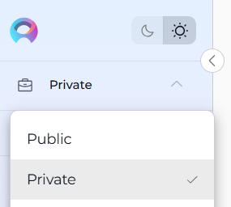
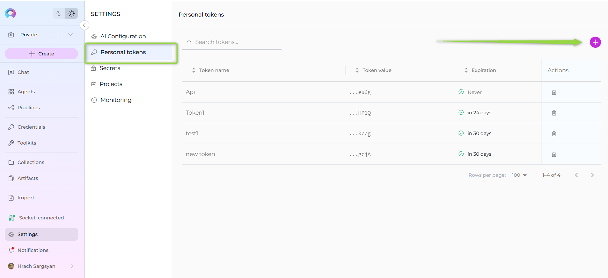
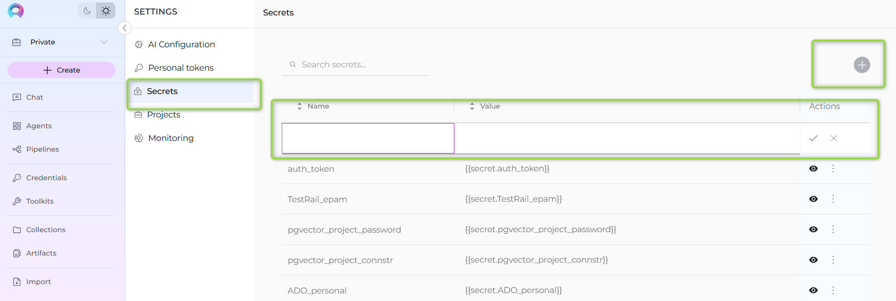
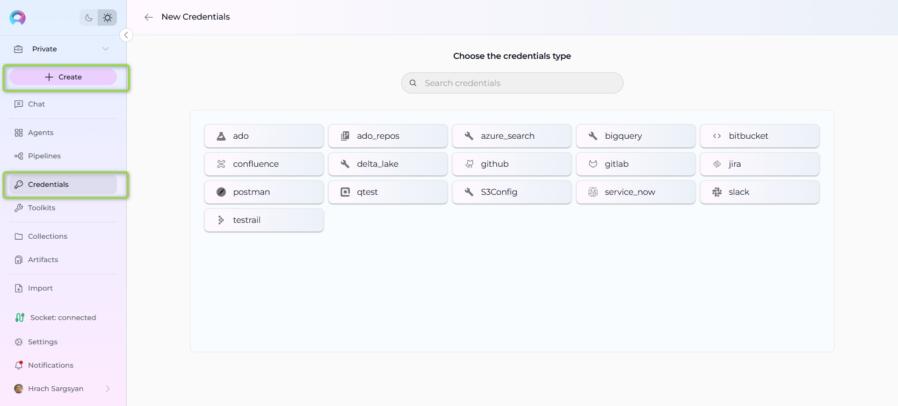
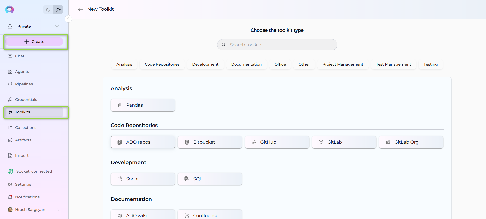
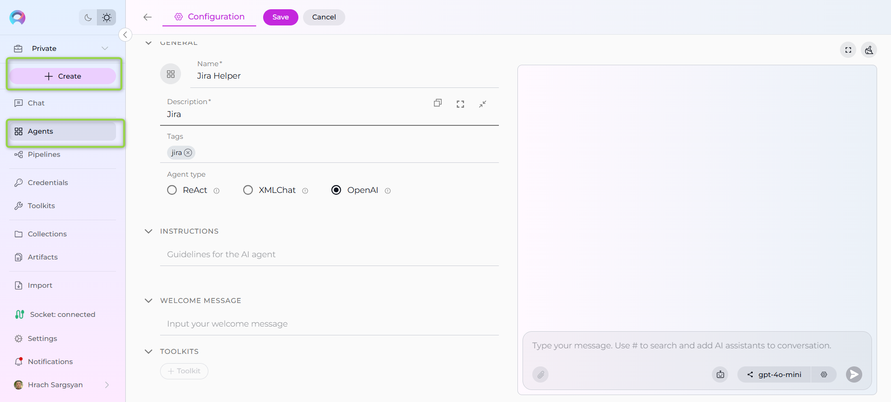
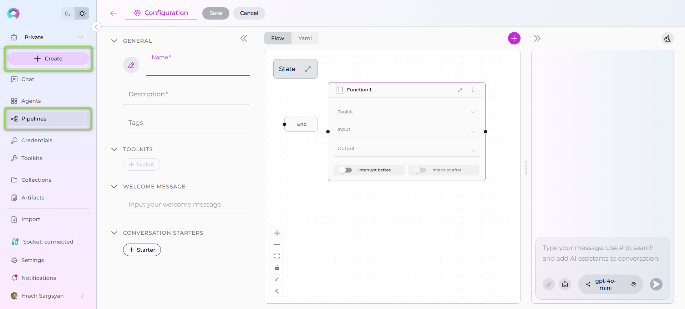
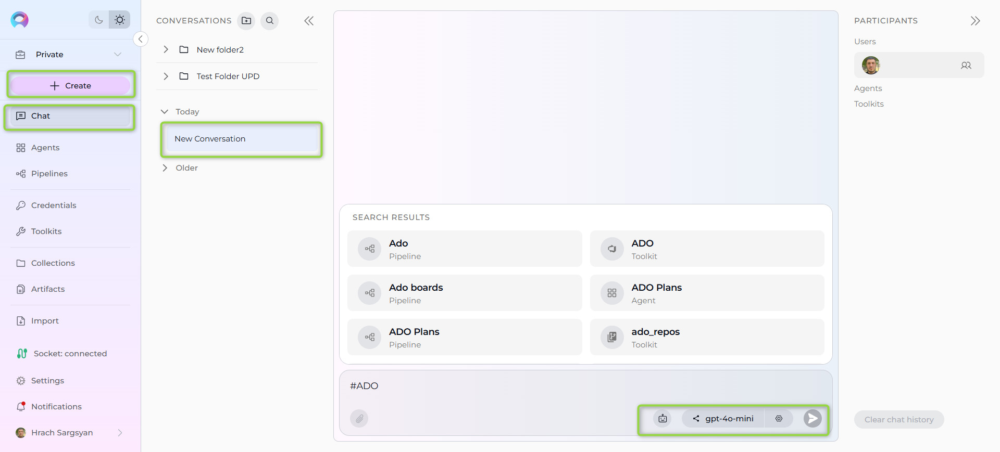

Quick Start with ELITEA¶
Welcome to ELITEA! This guide will help you quickly get up and running with the platform, from your first login to creating your first AI-powered agent. Follow these steps to start leveraging the full power of ELITEA's AI capabilities.
In this guide, you will:¶
- Access the ELITEA platform and set up your workspace.
- Create and configure your Private project for personal usage and experiments.
- Generate a Personal Access Token for secure API access and integrations.
- Set up Secrets for secure storage of sensitive information like API keys.
- Create Credentials to connect your agents to external services.
- Build your first Toolkit to integrate with external systems (GitHub, Jira, etc.).
- Create your first AI Agent with custom instructions and conversation starters.
- Design a Pipeline for complex, multi-step AI workflows.
- Start your first conversation with your newly created agent.
- Learn organization techniques for managing your AI resources effectively.
By the end of this guide, you'll have a fully functional AI agent connected to external services, ready to assist with your daily tasks.
Step 1: Access the Platform¶
- Open Your Browser: Use any modern web browser (Chrome, Firefox, Safari, Edge).
- Navigate to ELITEA: Enter
https://nexus.elitea.aiin your address bar. - Login: Sign in with your account credentials
- Initial Navigation: You'll land in the Chat menu automatically.
Step 2: Wait for Project Initialization¶
Important
First-time users need to wait for project setup. The Private project is provisioned automatically.
- Be Patient: Allow up to 5 minutes for your Private project to be created automatically.
- Initial View: You'll start in the Public project view during this initialization period.
- Check Status: You'll know your Private project is ready when you can switch from Public to Private using the project switcher.
Step 3: Switch to Your Private Project¶
- Locate Project Switcher: Find the Smart Drawer's Project Switcher in the top left corner of the interface.
- Switch Projects: Change from Public to Private once your project initialization is complete.
- Confirm Switch: You should now see your private workspace where you can create and manage your own assets.

Understanding Project Types¶
Private Project: Your personal workspace where only you have access to create and manage credentials, toolkits, agents, pipelines and collections.
Team Projects: If you're invited to team projects, you'll see them in the project switcher. Team projects enable:
- Collaborative workspaces with shared resources
- Role-based access (viewer, editor, admin, system)
- Shared conversations with teammate collaboration
- Real-time collaborative editing in Chat Canvas
- Shared credentials, toolkits, agents, pipelines, and collections for team use
Public Project: A community space to explore and learn from other users' shared content.
Step 4: Generate a Personal Access Token¶
Before creating agents and toolkits, you'll need a personal token for secure access:
- Navigate to Settings:
- Click the ELITEA icon in the top left to open the sidebar
- Select Settings from the menu
- Access Personal Tokens: Choose Personal Tokens from the Settings submenu.
- Create New Token:
- Click the
+icon to create a new token - Enter a descriptive name (e.g., "My Development Token")
- Set an expiration date for security
- Click Generate
- Click the
- Copy and Store: Immediately copy the token and store it securely. This is the only time you'll see the full token value.
- Configure Integration: (Optional):
- Select your preferred Integration Option from the dropdown (e.g., gpt-4, gpt-4o)
- Download VS Code or JetBrains settings if you plan to use code extensions

Reference
For more information, see the Personal Access Tokens Guide and Elitea Code Extensions.
Step 5: Create Your First Secret¶
Secrets provide secure storage for sensitive information like API keys and passwords:
- Navigate to Settings: Open the sidebar and select Settings.
- Access Secrets: Choose Secrets from the Settings submenu.
- Create New Secret:
- Click the
+ Createbutton - Enter a descriptive name (e.g., "GitHub-API-Key", "OpenAI-Token")
- Add your sensitive value (API key, password, token, etc.)
- Optionally add a description explaining what this secret is for
- Click Save
- Click the
- Secure Storage: Your secret is now encrypted and stored securely for use in credentials and toolkits.
Important
Secrets are write-only for security. Once saved, you cannot view the actual value again, only reference it by name.

Reference
For more information, see the Secrets Management
Step 6: Create Your First Credential¶
Credentials allow your agents to securely connect to external services:
- Navigate to Credentials: Open the sidebar and select Credentials.
- Create New Credential:
- Click the
+ Createbutton - Choose your Credential Type (e.g., GitHub, Jira, Azure DevOps)
- Fill in the required fields (API keys, usernames, passwords, or secrets)
- Give it a clear, descriptive name
- Click Save.
- Click the

Reference
For more information, see the Credentials Guide
Step 7: Build Your First Toolkit¶
Toolkits connect your agents to external systems and services:
- Navigate to Toolkits: Open the sidebar and select Toolkits.
- Create New Toolkit:
- Click the
+ Createbutton - Select the Toolkit Type that matches your credential (e.g., GitHub, Slack, Jira)
- Enter a name and optional description
- Click the
- Configure the Toolkit:
- In the CONFIGURATION section, select your previously created credential from the dropdown
- Fill in any additional settings (API endpoints, project keys, etc.)
- In the "Tools" section, enable only the specific tools your agent will use
- Save: Click Save to create your toolkit.

Reference
For more information, see the Toolkits Guide.
Step 8: Create Your First Agent¶
Agents are AI-powered assistants that can perform tasks using your toolkits:
- Navigate to Agents: Open the sidebar and select Agents.
- Create New Agent:
- Click
+ Createto start building your agent - Enter a clear name (e.g., "GitHub Assistant", "Jira Helper")
- Add a description explaining what your agent does
- Optionally add tags for organization
- Click
- Configure Agent Details:
- Choose the appropriate Agent Type (typically "OpenAI" for general use)
- Write clear instructions for your agent's behavior
- Add conversation starters to guide users
- Set a welcome message (optional)
- Save: Click Save to activate your agent
- Add Toolkits:
- Scroll to the "Toolkits" section
- Click "+ Toolkit"
- Select your previously created toolkit from the list.

Reference
For more information, see the Agents Documentation.
Step 9: (Optional) Create a Pipeline¶
Pipelines are visual workflows that can orchestrate multiple agents and automate complex processes:
- Navigate to Pipelines: Open the sidebar and select Pipelines.
- Create New Pipeline:
- Click
+ Pipeline - Enter a name and description
- Add tags if desired
- Click
- Configure Pipeline:
- Add and configure toolkits as needed
- Set up welcome messages and conversation starters
- Design your workflow using the visual pipeline editor
- Build Your Flow:
- Add Nodes: Use different node types like
function,tool,llm, andloop - Connect Nodes: Link nodes to define the execution sequence
- Set Entry Points: Define where your pipeline starts
- Configure Transitions: Specify how data flows between nodes
- Add Nodes: Use different node types like
- Save: Click Save when your pipeline is ready.

Reference
For detailed pipeline creation with YAML instructions and advanced flow configurations, refer to the Pipeline Agent Framework User Guide or Pipelines Documentation.
Step 10: Start Your First Conversation¶
Now it's time to test your setup:
- Navigate to Chat: Click on Chat in the sidebar.
- Create New Conversation:
- Click the
+ Createbutton - Give your conversation a name (or use the default)
- Click the
- Select Your Assistant:
- Look for the assistant switcher at the bottom of the chat
- Click the Switch assistant icon
- Select your newly created agent from the list
- Alternatively, type
#followed by your agent's name (e.g.,#GitHubAssistant)
- Start Interacting:
- Use your predefined conversation starters, or
- Ask your agent to perform tasks using its connected toolkit
- Test different capabilities to ensure everything works correctly

Reference
For more information, see the Chat Documentation.
Step 11: Organize and Expand¶
As you become comfortable with the platform:
- Create Folders: Organize your conversations using folders in the Chat section.
- Build Collections: Group related prompts, agents, and pipelines in Collections for better organization.
- Create Datasources: Connect your own data to make your agents more context-aware.
- Explore Advanced Features: Try pipeline agents for complex workflows, artifacts for file sharing, and extensions for development environments.
Quick Troubleshooting¶
Agent not working?
- Verify toolkit credentials are correct
- Check that your agent has the necessary toolkits assigned
- Ensure you have proper permissions for external services
Can't see your Private project?
- Wait the full 5 minutes for initialization
- Try refreshing your browser
- Check the project switcher in the top left
Token issues?
- Make sure you copied the full token immediately after generation
- Check that your token hasn't expired
- Verify integration settings match your intended use
What's Next?¶
You're now ready to explore ELITEA's full potential! Consider these next steps:
- Dive Deeper: Explore the platform documentation for advanced features.
- Join the Community: Check out public agents and pipelines for inspiration.
- Integrate Development Tools: Set up VS Code or JetBrains extensions using your personal token.
- Scale Your Workflows: Create pipeline agents for complex, multi-step processes.
- Share Your Work: Publish useful agents and prompts to help other users.
Welcome to the future of AI-powered productivity with ELITEA!